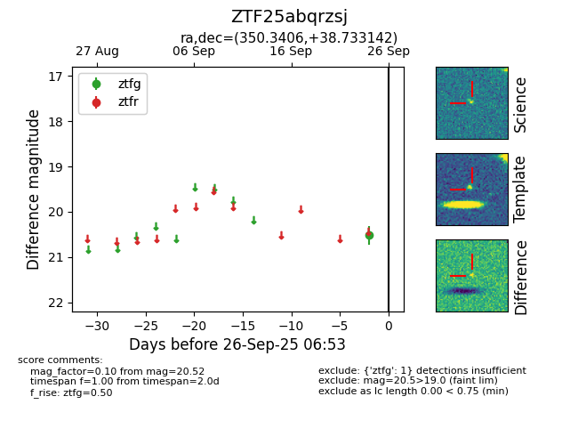

FINK: ZTF25abqrzsj
Lasair: ZTF25abqrzsj
ALeRCE: ZTF25abqrzsj
ZTF25abqrzsj (ztf,fink)
equatorial (ra, dec) = (350.3406,+38.73314)
galactic (l, b) = (104.2869,-20.85542)

last ztfg=20.52
1 ztfg detections